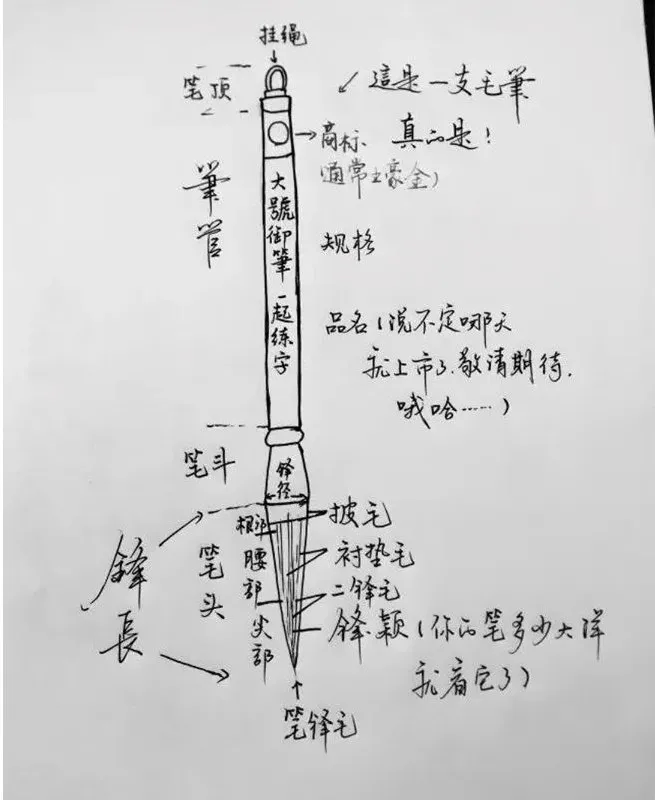

挑选建议

笔
一只好的毛笔需要具备“圆齐尖健”四个特点
「圆」指的是在蓄水或蓄墨后的笔根部和中部，圆润饱满，呈现圆锥状，不会过扁也不会过瘦
「齐」是说将笔打开后轻轻捏住笔毫中部，笔锋整齐，即毛笔受力均匀
「尖」是指毛笔开笔后，蘸水或蘸墨后笔豪聚合时，笔锋要收尖
「健」是毛笔有没有弹性，铺开锋后易不易于恢复原状。
 墨
墨
参考建议
加水后的墨汁千万不要再倒入瓶内，否则会造成瓶内墨汁变质
墨汁太浓，拉不开笔、容易滞涩；墨汁太淡，笔一上纸就洇墨
写楷书，一般多用较浓的墨；而写行草，墨汁就要相应的淡些
 纸
纸
参考建议
（看）眼看－－好纸不一定白，太白说明增白剂太多，不利久藏；纸白但不刺眼，反光柔和；不能有草梗、沙粒、裂口、洞眼、其他附着物。
（摸）手感－－光滑、细腻、厚薄均匀、光滑中又有阻力。
（抖）抖纸－－绵软不脆。如有嘻哩哗啦的响声、手感僵挺，决不是好纸。
（试）蘸墨试纸－－好纸反应：吃墨快、扩散均匀、墨缘无锯齿状、再点第二次，墨干后层次分明、墨迹清晰、两次墨点中间有细细的白印。
 砚
砚
参考建议
大小：看字的大小，小字用小砚，要发墨好一些的，大字用大砚，要求砚的下墨要快一些
下墨：指的是墨条在砚堂里磨成墨液的速度。发墨，指的是墨液的质量，包括粗细、光泽、黑度、上纸后的层次、色温、饱和度等等。
坑口：一般选择端砚三大名坑，歙砚四大老坑，洮河砚两大名坑的东西，有瑕疵或者没有名贵石品的料子。